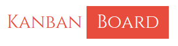

<mat-toolbar color="secondry">
  <button
    type="button"
    aria-label="Toggle sidenav"
    mat-icon-button
    (click)="drawerToggle = !drawerToggle"
    *ngIf="(isHandset$ | async)!.matches"
  >
    <mat-icon aria-label="Side nav toggle icon">menu </mat-icon>
  </button>
  <span class="spacer">
    <!-- KanbanBoard -->
    <button mat-button color="secondry">
      
      
    </button>
  </span>
  <mat-slide-toggle
    [checked]="otherTheme"
    (toggleChange)="otherTheme = !otherTheme"
    color="warn"
    aria-label="theme"
  ></mat-slide-toggle>
  <!-- <button type="button" mat-icon-button>
          <mat-icon>format_color_fill</mat-icon>
        </button> -->
  <button type="button" mat-icon-button (click)="logout()">
    <mat-icon>exit_to_app</mat-icon>
  </button>
</mat-toolbar>
